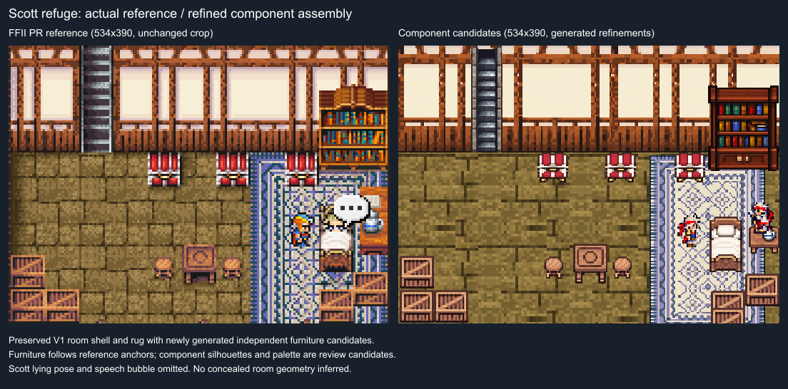
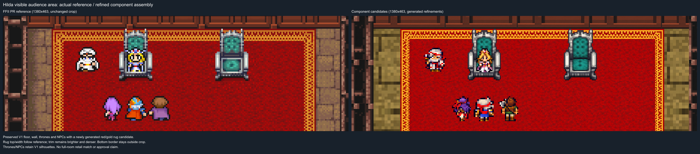

Room component refinement V2
Assets-only candidates. Original reference left, refined component assembly right, with identical crops. New generated components refine Scott furniture and Hilda rug. No game integration or approval is claimed.
Scott refuge

Reference crop · Assembly PNG · Sources and placements · Verification
Hilda visible audience room

Reference crop · Assembly PNG · Sources and placements · Verification